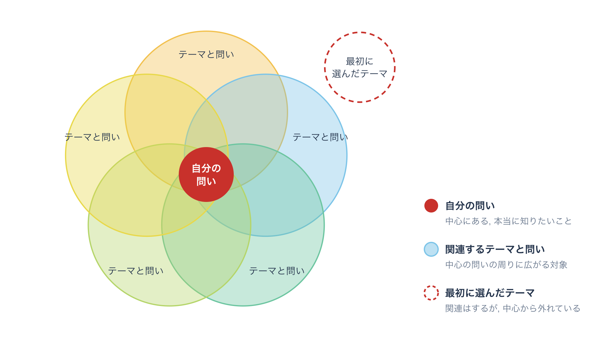
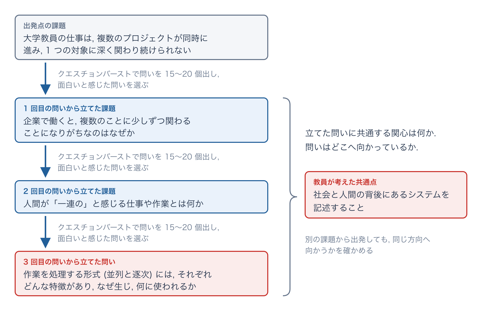

問いの立て方
テーマと問いの違い
研究を始めるとき, 多くの学生が最初に挙げるのは, 「SNS と若者の消費」「地域の観光」のようなテーマです. テーマは研究の対象を名詞で示したもので, その対象について何を知りたいかは示しません. これに対して問いは, 知りたいことを疑問文で示したものです. 例えば「若者向けの商品のうち SNS で話題になったものは, 話題になる前と後で, 売上の伸び方が変わるのか」は, 「SNS と若者の消費」というテーマから立てた問いの 1 つです.
マラニーとレアは, テーマと問いの違いを次のように整理しています (トーマス・S・マラニー & クリストファー・レア, 2023, p. 35). テーマは名詞で, 修飾語を伴うことが多く, 好奇心の対象を示します. テーマからは無数の問いが生じますが, それらの問いの方向は定まらず, テーマ自体には答えがありません. 問いは疑問符で終わる文で, 好奇心の対象に加えて, その好奇心をどう満たしたいかという意向もある程度示します. 問いはより具体的な関連する問いを生み, 答えがあります (答えが複数あることもあります).
この整理を受けて, 本科目では, 自分の関心を問いの形に直すときに次の点を確かめます.
- 名詞のテーマを, 疑問文に直す.
- 「〇〇を検討する」「〇〇を調査する」「〇〇を学習する」は, 何をするかを述べた文で, 疑問文ではない.
- 「現代的な」「伝統的な」「合理的に」「効果的に」のような形容詞や副詞を付けただけでは, 問いにならない.
- できれば, 検証や反証ができる問いにする. 「〇〇は良いか」「〇〇は重要か」「〇〇は影響を与えたか」「〇〇とは何か」は抽象的すぎて, 何を確かめれば答えになるのかが分からない. 例えば「SNS は若者の消費に影響を与えたか」は, どの消費を, 何と比べて確かめるのかを決めると, 上の売上の伸び方の問いになります.
自分の問いを中心に置く
テーマを問いの形に直せても, その問いが自分の本当に知りたいことだとは限りません. 次の図は, 1 人の学生の関心を表した模式図です (説明のための図で, 実データは使用していません). 中心に自分の問いがあり, その周りに, 中心の問いと関連する多くのテーマと問いが重なり合って広がっています. 最初に選んだテーマは, 関連はしていても中心から外れていることがあります. そのようなテーマで研究を始めると, 興味はありそうなのに, 進めてもそれほど面白くないと感じます.

中心にある自分の問いに, 直接取り組めるかは分かりません. 多くの場合, 中心の問いはとても大きく, 一生をかけて取り組むような問いです. それでも, 1 年間かけて研究をするなら, 楽しく, 本当に興味があり, 将来につながる研究にするほうがよいはずです. そのために, 自分の関心がどこにあるかをはっきりさせ, 中心に近い問いに取り組みます.
自分の問いを探す手がかりは, 自分が選んだテーマについて「なぜそれを研究するのか」「なぜそれが面白いと感じるのか」を考えることです. このとき, 人に向けた理由ではなく, 自分にとっての理由を考えます.
マラニーとレアは, 人に向けた理由と自分にとっての理由の違いを, 著者の 1 人のトム・マラニーが学生と面談した例で説明しています (トーマス・S・マラニー & クリストファー・レア, 2023, 第 1 章第 1 節). 歴史学の課題で中国の風水を論文のテーマに選んだ学生は, 講義で学んだ用語を使って, 風水は「中国の近代化」を検証する手がかりになり, 前近代から近代へ移るときの「知識の生産」を検証できると説明しました. トムが「なぜ風水なの」と尋ねると, 学生は, 「文献にはギャップ」がある (先行研究にまだ埋められていない空白がある) といった研究者の用語で理由を挙げました. 著者らによると, 考えついたばかりの研究案を「重要」だとか「意味がある」といった用語で正当化しようとするのは, 経験の浅い学生に限らず, ほとんどの研究者がすることです. そのうえで著者らは, 研究の最初の段階で必要なのは外部の評価ではないとして, 次のように述べています.
研究プロジェクトの最初期の段階で必要なのは、きわめて個人的な問いに答えることだ——面白そうな研究テーマはいくらでもあるのに、なぜ私はとくにこのテーマに惹かれるのか。
しばらく間があってから, 学生は口調を変え, 自分にとっての理由を話し始めました.
「私の母は弁護士です」と学生は続けた。「高い教育を受けているし、こんなに合理的な人はいないってぐらい合理的な人です。ぜんぜん迷信深い人じゃありません。なのに風水を信じてるんです——本気で信じてるんですよ。それが私には理解できないんです」
そのとたん、これまでとは違う質問が次々に飛び出してきた。「合理的」な人はほかにどんなことを信じないと思う？（中略）その「合理的かそうでないか」の境界を決めるのはだれ、またはなんだろうか。（中略）それはそうと「合理的」とはどういう意味だろう。どうして私はその言葉を使っているのだろう。
2 つの引用はマラニーとレアの本文から取り, 傍点は省略しました (トーマス・S・マラニー & クリストファー・レア, 2023, 第 1 章第 1 節).
学生が母を「合理的」な人と呼んだ自分の言葉が, 何を合理的とみなすのか, その境界を誰が決めるのかという問いの出発点になりました. 研究者の用語で理由を挙げていた間には出てこなかった問いです. 本科目の方針 (LLM の利用を前提に, 本人が面白いと思える問いを選ぶ) も, 本人の関心から出発する点で, マラニーとレアの考え方と同じです.
問いを集めて共通点を探す
自分の問いは, 1 つの問いを考え込むよりも, 関心のある問いを多く並べて共通点を探すほうが見つけやすくなります. マラニーとレアは, 次の手順を挙げています (トーマス・S・マラニー & クリストファー・レア, 2023, pp. 98–99).
- 関心のある問いを, すべて目の前に並べる.
- どの問いにもまだ答えようとせず, それらの問いに共通する関心事は何かを自問する.
- 他人になったつもりで, これらの小さな問いを結びつける, より深い問いは何かを考える.
- 思いついた問いを書き出す.
- 必要なら, 具体的か一般的かの度合いで, 中くらいの水準の問い, 高い水準の問い, と順位を付ける. ここで出た問いは, それまでの具体的な問いより一般的になっているはずです.
この手順には, 並べる問いが多く要ります. 次の節のクエスチョンバーストは, その問いを短い時間で大量に出す方法です.
クエスチョンバースト
本科目では, グレガーセンが提案したクエスチョンバースト (1 つの課題について, 答えを出さずに問いだけを短い時間で大量に出す方法) を使います (ハル・グレガーセン, 2018/2020). 本科目での手順は次のとおりです.
- 関心のある課題か問いを 1 つ選ぶ.
- 手伝ってくれる数人に, 2 分でその課題を説明する.
- 4 分間で, その課題についての問いを 15〜20 個出してもらう. 説明した人は, 出た問いをひたすら記録する. 答えや解決策は出さない. 他の人の問いに反対しない.
- 出た問いを読み返し, 新しい方向を示している問いや, 興味を惹かれる問いを複数選んで記録する.
- 選んだ問いがなぜ新しく感じられ, なぜ興味を惹かれるのかを分析する. その問いからどのような研究になるかも考える.
- 記録した問いをもとに新しい課題を 1 つ立て (記録した問いをそのまま使っても, 言い直しても構わない), 2〜5 を繰り返す.
1 回目は講義の中で, 教員と他の学生と一緒に行います. グループの全員が順に課題を説明します. 講義では, 説明した人の代わりに, 課題を聞いた人が問いを共有のファイルに直接書き込みます. 全員の課題で一巡したら, 各自が自分の課題に出た問いを読み返して分析します (手順 4, 5). 2 回目からは, 毎回, 直前の回の問いをもとに次の課題を立て, 自分で何回か繰り返して問いを深めます. 1 人で行う回は, 手順 2 の説明を省き, 自分で問いを出して記録します. LLM を相手にしても構いません. LLM への頼み方は問いを広げるにあります.
教員が 1 人で 3 回繰り返した例
手順を, 担当教員が自分の課題で, 3 回とも 1 人で行った例で示します.
課題と問いは, 教員が書き留めた言葉に近い形で載せています. 2 回目の「コミットするとは何か, 関わるとは何か」「なりがちという言葉を使ったのはなぜか」のように, 課題の言葉そのものを問い直す問いがあるためです.
1 回目の課題は「大学教員の仕事が複数のプロジェクトの同時進行からなり, 特定の対象に深く継続的にコミットできないこと」でした. 出した問いは次の 19 個です.
- 具体的にはどのような業務があるか
- 大学教員の定義と範囲は何か
- 特定の対象とは何を想定しているのか
- なぜ深く継続的にコミットする必要があるのか
- 他の仕事も同様なのではないか
- だとするとなぜ人は複数のことをそもそも並行で行う必要があるのか
- 複数のことを並行で行うことには何かメリットがあるのではないか
- デメリットがあるとしたら具体的に何か
- いくつまでなら並行しても問題ないのか
- 深くとは具体的にどのようなことを示しているのか, 時間なのか
- 継続することが重要なのか
- 深く継続的にコミットすることができると, 本当に何か良いものがあるのか
- 何か良いものとは何か
- 大学教員の仕事とは何か
- 誰が決めているのか
- なぜそれをしなければならないのか
- 順番に片付ければいいのではないか
- 順番の問題ではないのか
- この人は何をしたいと考えているのか
読み返して面白そうだと感じたのは, 「他の仕事も同様なのではないか」から「デメリットがあるとしたら具体的に何か」までの 4 つの問いです. 元の課題から考えられる研究は「日本の大学教員の業務形態と研究成果との関連」ですが, つまらなそうで, 調べ物で終わり, 大学教員の狭い話にとどまりそうでした. 面白そうだと感じた問いからは, 「プロジェクトやタスクの分配の方式が業務の成果に与える影響」のような研究が考えられます. こちらは数理モデルで理由まで説明できそうで, 人間の働き方一般の話になり, 少し面白くなりました. そこで, 面白そうだと感じた 4 つの問いをもとに, 2 回目の課題を「企業で働くと, 並行して複数のことに少しずつコミットすることになりがちなのはなぜか」と立てました.
2 回目に出した問いは次の 16 個です.
- 何かメリットがあるからでは
- 本当になりがちなのか
- そうでない職とそうなる職の違いは何か
- 企業でなくても, 狩猟採集や農耕でも同じなのではないか
- 歴史的に割と新しい事例なのではないか
- 日本独自なのか, それとも他の国や地域でも同じなのか
- 複数のこととは何か, プロジェクトなのかタスクなのか
- 一つのことというのは, 定義によっていかようにでもなるのではないか
- 企業運営は一つのことと言えるのか
- ハンコを押すというレベルの動作の話なのか
- 人間は何を一連のタスク, ひとまとまりとして捉えるのか
- つながりが切れたと感じるのはどのようなときか
- 関連するものとしないものの定義は何か
- 少しとはどれくらいか, 時間なのか量なのか
- コミットするとは何か, 関わるとは何か
- なりがちという言葉を使ったのはなぜか
2 回目の問いをもとに, 3 回目の課題を「人間が『一連の』と感じる仕事や作業とは何か」と立てました. この問いから考えられる研究は「作業における連続性, 分断, 並行」です. 認知心理学や哲学の領域に入り, 自分の手に負えなさそうで, 1 つの研究には収まらず本 1 冊ほどの大きさになりました. ただ, アルゴリズム論の議論にできれば, 自分でもできなくはなさそうでした.
3 回目に記録したのは次の 16 個です. 問いのほかに, 問いのきっかけになった気づきを 1 つ含みます.
- 仕事や作業とはそもそも何か
- 人間に限定される話なのか
- 物理などでも「仕事」などの言葉は使う
- 「連続する」の一般的な定義は何か
- 感じることが重要なのか, それとも外部的な定義があるのか
- 仕事と作業の違いは何か
- なぜそもそも仕事をしているのか
- 連続することとそうでないことに, 何か判別するべき面白いことがあるのか
- 一連と感じることで何かメリットがあるのか
- 感じるということと, アウトプットに何か関係があるのか
- アウトプットが重要なのか, 認知が重要なのか
- 人間でなくても, コンピュータなどでも一連の作業が何か定義されているのではないか
- コンピュータなどは, 人間の認知が元になっているからそのようになっているのか
- それ以外の認知, 処理の仕方があるのか
- あるとして, なぜそれを人間は採用していないのか
- あるいは既に採用されているのか
3 回目の問いをもとに立てた問いは「作業の処理の形式ごとの特徴と, その発生の原因, 用途は何か」です. 考えられる研究は「人間社会における並列と逐次」で, 社会の中の並列処理 (複数の作業を同時に進めること) と逐次処理 (作業を 1 つずつ順に進めること) をシステムとして比べ, なぜ使い分けられているのかを調べる研究になりそうでした. 計算科学や進化論に近い話になり, 最初の課題よりは明らかに面白そうでした.
次の図は, この 3 回の流れを模式的に示したものです. 教員は, 3 回繰り返すと, 問いが最初の課題より本質的になり, 自分にとって面白そうな話になったと感じました. 各回で立てた問いを並べて, 共通する関心は何か, 問いがどこに向かっているかを考えると, 中心の問いを探す手がかりになります. この例の教員は, 立てた問いに共通する関心を「社会と人間の背後にあるシステムを記述すること」だろうと考えました. 別の課題から出発して同じ手順を行い, 同じ方向に向かうかどうかも確かめます.

この例の問いは, 2 回目で認知心理学や哲学, 3 回目で計算科学の問いに向かいました. 本科目で扱うのはデータサイエンスに属する研究です (扱う研究の範囲). そのため, 見つけた中心の問いから, データを集めて分析すれば答えられる問いを, 研究計画の段階で取り出します.
問いに答えるための地図
自分の問いが見つかったら, その問いに答えるために何ができるかを考えます. 自分の問いに答えるには, 多くの小さな問いに答える必要があります. 小さな問いごとに, 次のことを調べます.
- その問いは, どの学問分野 (経済学, 心理学, 社会学など) で研究されているか.
- その分野で, 何が分かっていて, 何が分かっていないか.
- どのようなデータと手法で答えられるか.
これを並べると, 自分の問いに答えるための地図になります. 小さな問いの中には, 既に研究されていて, 文献を読めば答えが分かるものがあります. 研究計画の段階では, まず小さな問いを文献で調べ (小さな問いを文献で調べる), 文献だけでは答えきれなかった問いから, 1 年間の研究で答える問いを選びます.
問いを出し, 膨らませ, 文献を調べ, また問いを出す過程は, 研究計画を立てた後も続きます. 文献を読んで新しい問いが出たら, この過程に戻ります.
演習
Exercise DSPJ4-1
クエスチョンバーストを講義で行い, 自分で繰り返して深める
自分の関心のある課題を 1 つ選び, 講義の中で, 教員と他の学生と一緒にクエスチョンバーストの 1 回目を行ってください. その後, 直前の回の問いをもとに次の課題を立て, 自分で何回か繰り返してください. 各回について, 出た問いのすべて, 選んだ問いとそれを選んだ理由, その問いから考えられる研究を, PC のファイルに書き残してください.
Exercise DSPJ4-2
1 年間で探究する問いの候補を 3 つ挙げる
Exercise DSPJ4-1 の記録から, 問いを集めて共通点を探すの手順で自分の問いの分析を進め, 本科目の 1 年間で探究する問いの候補を 3 つ挙げてください. それぞれについて, なぜ自分にとって面白いのか, 自分の中心の問いとどう関わるのかを, 講義で説明できるようにしておきます.